Publications
Peer-reviewed research in explainable AI, low-resource NLP, computer vision, and scientific machine learning
Journal Articles
Bayesian Physics-Informed Neural Networks for Parameter Inference and Uncertainty Quantification in Reaction-Diffusion Models of Wound Healing
Abstract
Predictive mathematical models of biological processes like wound healing are essential for quantitative understanding, but their clinical utility is often limited by a critical roadblock: uncertainty in their biophysical parameters. These parameters are difficult to measure directly and must be inferred from sparse, noisy data. This paper presents a Bayesian Physics-Informed Neural Network (BPINN) framework to address this challenge by performing robust parameter inference and principled uncertainty quantification. We frame the identification of unknown parameters in a coupled reaction-diffusion system for wound healing as a Bayesian inverse problem. By integrating sparse observational data with the governing physical laws within a variational inference framework, the BPINN learns the full posterior distributions of unknown model parameters. Our results show that the framework accurately infers key reaction parameters from a dataset comprising less than 0.01% of the full spatio-temporal domain. More importantly, the BPINN correctly diagnoses that the cell motility parameter is practically non-identifiable from the sparse data, a conclusion supported by the large posterior uncertainty it assigns. The model’s predictive uncertainty is well-calibrated, being highest in regions far from observations. This work establishes the dual value of BPINNs as a powerful computational tool: both for developing reliable, personalized biomechanical models through data-driven calibration, and for diagnosing parameter identifiability issues—a critical step towards building trustworthy models in computational medicine and systems biology.
Optimizing Semantic Retrieval for Bengali: A Comparative Analysis of Monolingual and Multilingual Embeddings with Matryoshka Representation Learning
Abstract
Effective semantic retrieval remains the primary bottleneck for Bengali Retrieval-Augmented Generation (RAG) systems. While general-purpose multilingual models exist, they often lack the semantic alignment required for high-precision tasks. This paper presents a comparative study of three embedding architectures—monolingual (shihab17), distilled multilingual (distiluse), and paraphrase-focused (mpnet)—to identify the strongest retrieval foundation for Bengali. The models are fine-tuned on the BanglaRQA dataset with a composite objective combining Multiple Negatives Ranking Loss and Matryoshka Representation Learning (MRL). Results show that architectural choice is decisive: the fine-tuned mpnet model achieves an NDCG@10 of 0.8114 and statistically outperforms the monolingual baseline (p < 0.001). Beyond retrieval quality, efficiency analysis for low-resource deployment shows that MRL-trained MPNet preserves 96% of retrieval effectiveness at 128 dimensions, reducing storage cost by 83% without meaningful accuracy loss.
CCS Concepts: Computing methodologies → Natural language processing; Neural networks. Information systems → Retrieval models and ranking.
Conference Publications


An Attention-Based Deep Learning Approach to Knee Injury Classification from MRI Images
Abstract: Knee injuries, prevalent in athletic and aging populations, pose significant challenges to healthcare professionals due to their complex nature and the critical function of the knee joint. Early and accurate diagnosis is paramount to ensure effective treatment and minimize long-term complications. Traditional diagnostic methods, including physical examinations and imaging techniques like MRI, require expert interpretation and can sometimes be inconclusive. This study introduces an approach to knee injury classification using deep learning techniques by leveraging convolutional neural networks (CNNs) with Attention Mechanism. This research work integrates powerful feature extraction capabilities of CNN and feature refinement of attention mechanism for the binary and multi-class classification of knee MRI images, with the aim of accurately identifying specific knee injury types. Based on our experiment on two comprehensive knee MRI datasets, our custom CNN model achieved 88% testing accuracy on Dataset-1 (Binary classification) and 77% accuracy on Dataset-2 (Multi-class classification). Meanwhile, the Attention-based CNN model achieved 100% accuracy on Dataset-1 (Binary Classification) and 91% accuracy on Dataset-2 (Multi-Class Classification). This approach not only holds promise for enhancing diagnostic accuracy but also for reducing the time to diagnosis.
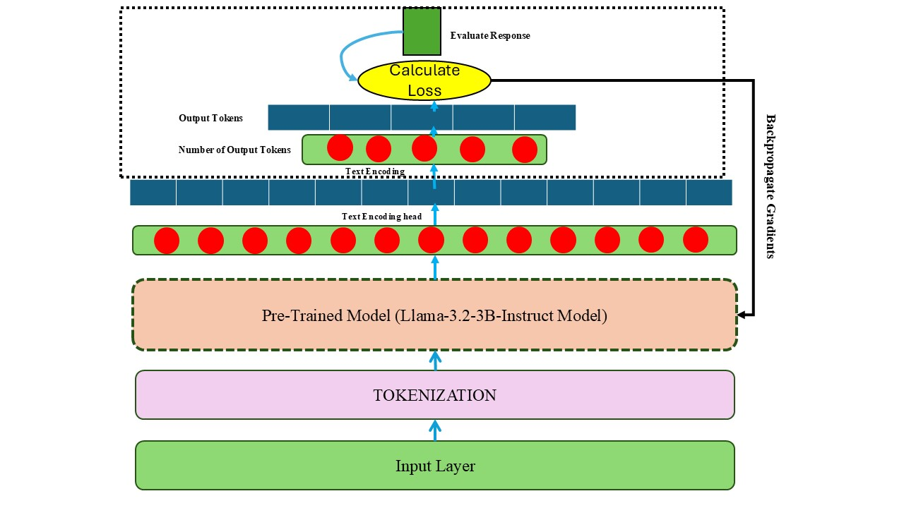
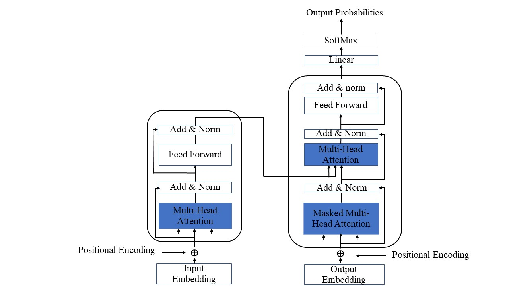
Advancing Low-Resource NLP: Contextual Question Answering for Bengali Language Using Llama
Abstract—Natural language processing (NLP) has witnessed significant advancements in recent years, particularly in improving question-answering (QA) systems for well-resourced languages such as English. However, the development of such systems for low-resource languages, including Bengali, remains insufficiently explored. This study proposes an approach to developing a Bengali QA system utilizing the Llama-3.2-3B-Instruct model, leveraging transfer learning techniques on a synthetic dataset derived from the SQuAD 2.0 benchmark. The experiments achieved an F1 score of 42.77%, marking a 4.02% improvement over the previous best performance of multilingual BERT (mBERT) variants. These results establish a benchmark against human responses and underscore the potential of transfer learning in advancing QA capabilities for Bengali and similar low-resource languages.
Conference Presentation
Presented at ECCE 2025 Conference • Video & Slides Available
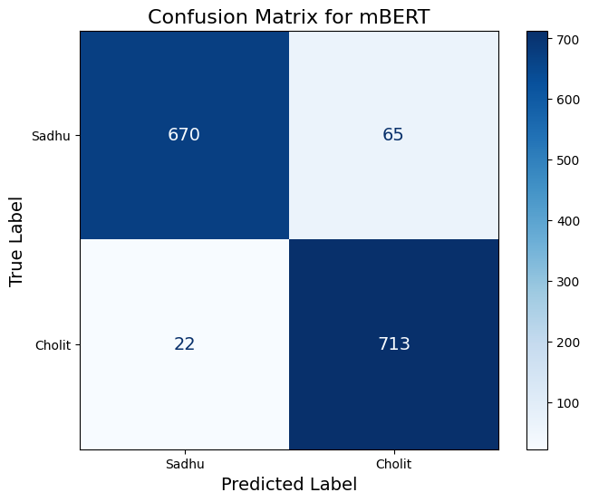
Distinguishing Between Formal and Colloquial: A Multilingual BERT Approach to Bengali Language Classification
Abstract—The Bengali language, rich in history and cultural significance, poses unique challenges in Natural Language Processing (NLP) due to its dual-register structure: Sadhu (formal) and Cholit (colloquial). These registers differ significantly in syntax, vocabulary, and usage, complicating tasks such as text classification, translation, and sentiment analysis. Language models not specifically trained to recognize these distinctions often misinterpret these variations, limiting the accuracy of Bengali NLP tools. To address this, a dataset from Mendeley was used to fine-tune the multilingual BERT (mBERT) model for distinguishing between Sadhu and Cholit registers. The fine-tuned model achieved an accuracy of 94.08%, effectively capturing the subtle lexical and syntactic differences between the two forms. This work advances Bengali NLP, enabling more precise applications in digital communication, automated translation, and linguistic analysis, while contributing to broader advancements in low-resource language processing.
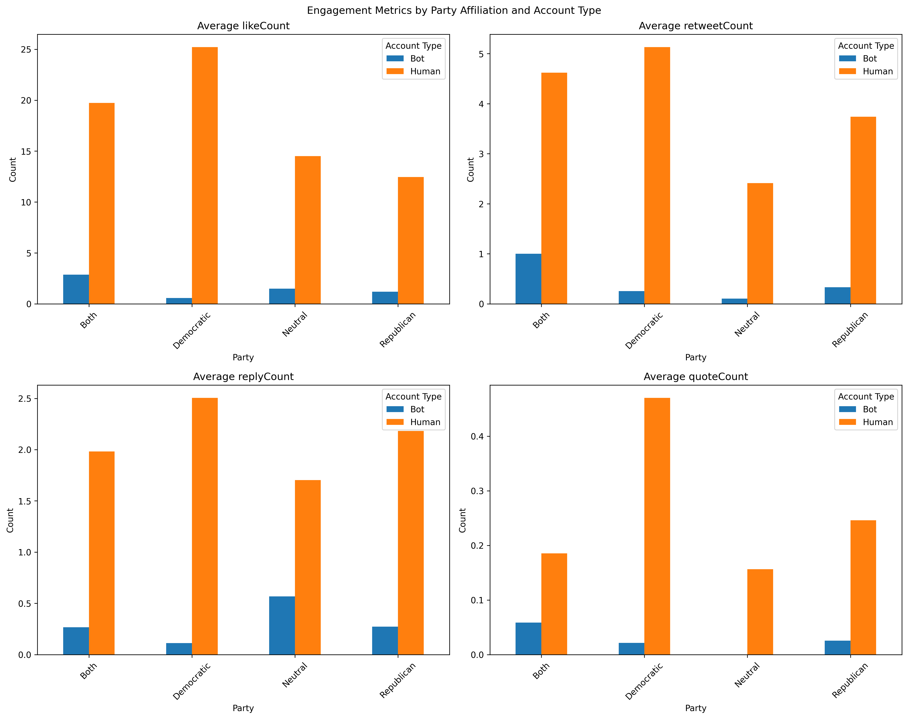
Analyzing Bot Activity and Political Discourse in the 2024 U.S. Presidential Election: A Machine Learning Approach to Misinformation and Manipulation
Abstract—Social media has become a battleground for political discourse, with automated accounts (bots) playing a growing role in shaping public opinion and engagement. In the context of the 2024 U.S. Presidential Election, understanding bot activity is crucial for identifying potential misinformation and manipulation tactics. This study analyzes 50,191 tweets collected between May and July 2023 to assess bot prevalence and influence. Bot detection is conducted using Botometer API scores and a Random Forest Regressor (MSE: 0.0071, R2: 0.779), facilitating a multi-threshold analysis. Findings indicate a low overall bot presence (2.22% at a 0.7 threshold) but significant variations across political affiliations. While human-generated content dominates with a 15:1 engagement ratio, bots are most effective in cross-party discussions (engagement ratio: 0.145), whereas Democratic-focused bots exhibit the lowest engagement success. To deepen insights into election-related influence operations, a novel party-affiliation analysis framework is introduced, shedding light on platform-specific manipulation strategies and their implications for political discourse.
Distinguishing Human-Written and AI-Generated Text: A Comprehensive Study Using Explainable Artificial Intelligence in Text Classification
Abstract
Enhancing interpretability without compromising accuracy is a critical challenge in text classification. This research explores the integration of Explainable Artificial Intelligence (XAI) techniques with advanced machine learning models, utilizing the Local Interpretable Model-Agnostic Explanations (LIME) framework to provide transparency. A fine-tuned BERT model achieved state-of-the-art performance, surpassing Random Forest and Sentence Embedding-based models with a perfect 100% accuracy (ROC-AUC score of 1.00). While Random Forest classifiers offered a solid baseline, they struggled with semantic nuances, underscoring the need for embedding-based approaches. The study highlights the inherent trade-off between interpretability and accuracy, demonstrating that while transformer-based models like BERT excel at capturing complex linguistic patterns, their black-box nature necessitates tools like LIME for explainability. By bridging this gap, the research contributes to the development of more transparent, reliable, and high-performing AI systems.
Research Visualization
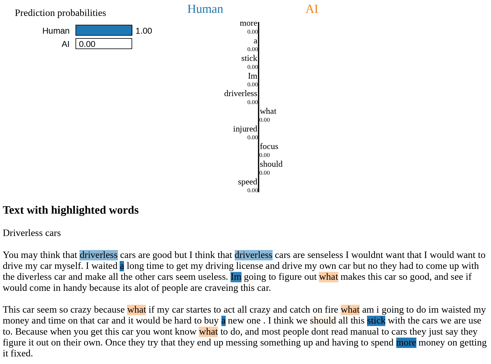
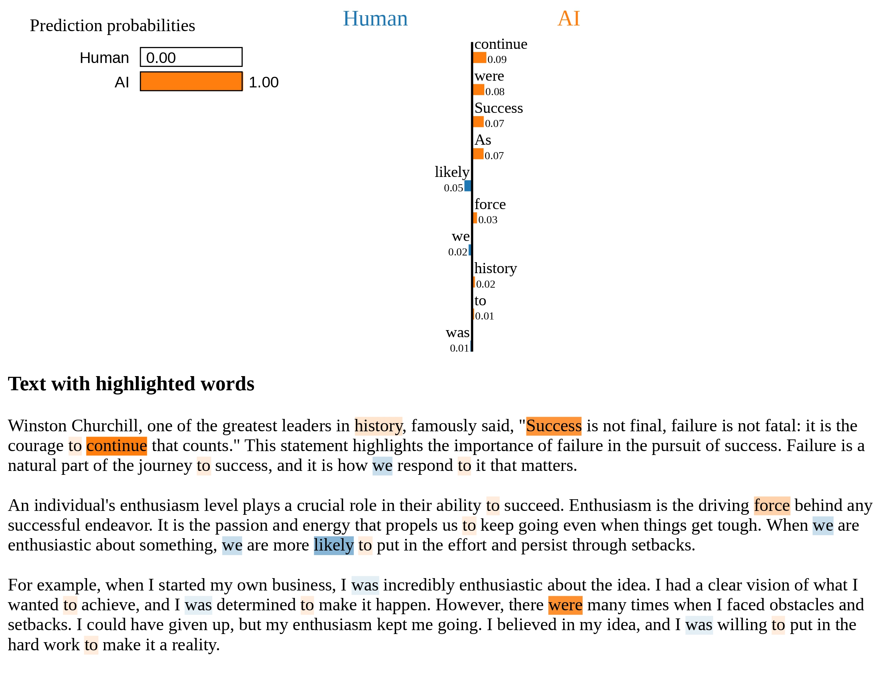
Additional Conference Paper
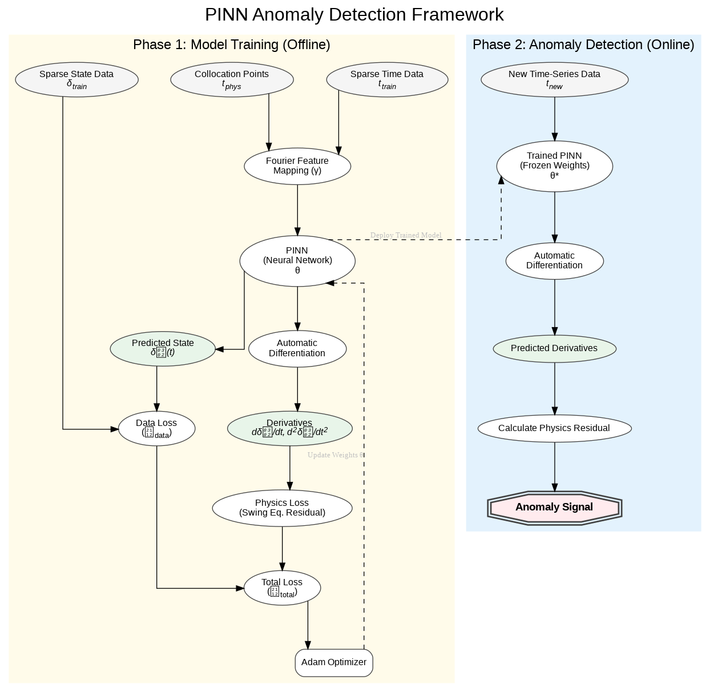
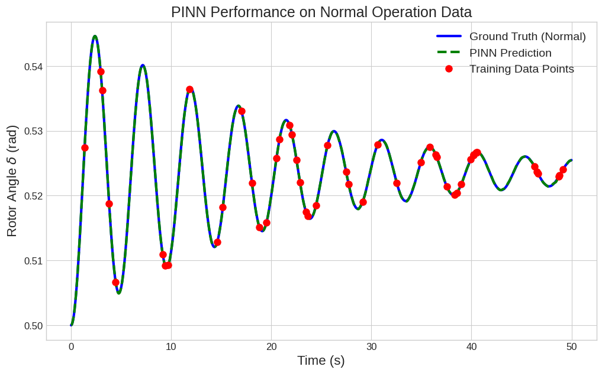
Physics-Informed Neural Networks for Real-Time Anomaly Detection in Power System Dynamics
Abstract
The stability of modern power grids is increasingly challenged by dynamic disturbances, while conventional data-driven models often require extensive labeled fault data and offer limited interpretability. This work proposes a Physics-Informed Neural Network (PINN) framework for real-time anomaly detection by embedding the swing equation directly into the model loss. To address oscillatory training instability, the method integrates Fourier Feature Mapping with loss weight annealing. Trained only on sparse normal-operation data, the model reconstructs system states accurately and uses the physics residual as an interpretable anomaly signal. Experiments on a Single-Machine Infinite Bus system show instantaneous and precise fault detection, with clearer and more interpretable signals than an LSTM baseline.
Conference Presentation
Presented at BIM 2025 Conference • Video & Slides Available
Research Areas
Explainable & Trustworthy AI
Interpretability, explanation fidelity, counterfactual explanations, robustness, explanation evaluation, and human-centered explainability.
Natural Language Processing & LLMs
Low-resource NLP, Bengali NLP, semantic retrieval, RAG, representation learning, large language models, and LLM evaluation.
Computer Vision & Multimodal AI
Visual recognition, medical imaging, synthetic image detection, multimodal learning, and explainable vision systems.
Scientific Machine Learning
Physics-informed neural networks, uncertainty quantification, Bayesian deep learning, and dynamical systems.
Experience
Academic & Research Experience
Graduate Research Assistant
South Dakota State University (Brookings, South Dakota, USA)
August 2026 - Present
Conducting doctoral research in artificial intelligence and machine learning, with a focus on explainability, trustworthy AI, and related applications in computer vision, NLP, and multimodal learning.
Industry Experience
Software Engineer I
Universal Machine Inc. (Sunnyvale, CA, USA - Remote)
April 2025 - Present
- • YouTube Live Stream Bot: Developed Chrome Extension automating YouTube Live chat using JavaScript, Chrome APIs, and async requests. Integrated YouTube & OpenAI APIs for real-time chat fetching/posting and AI response generation. Engineered AI features managing conversational history and prompt engineering for context/recall. Implemented secure Google OAuth and robust error handling for external APIs.
- • cBORG DAO Governance Platform: Built full-stack decentralized governance platform using React/Next.js, FastAPI, PostgreSQL, and Ethereum smart contracts for community proposal voting and treasury management. Integrated OpenAI GPT-4o to automatically parse natural language chat messages into structured trading proposals with confidence scoring and real-time voting. Implemented SIWE wallet linking with nonce-based authentication, JWT tokens, and privacy-preserving user identity management.
Data Scientist
Manaknightdigital Inc. (Toronto, ON, Canada - Remote)
March 2023 - April 2025
- • Chatbot Development: Collected and processed product information using Excel, pandas, and openpyxl. Integrated GPT-4 to respond to user queries and manage token size limitations. Utilized libraries like nltk, sklearn, and Flask for deploying the chatbot.
- • AI-driven Fraud Detection: Performed EDA and feature extraction on transaction datasets. Developed and optimized ML models including Xgboost, SVC, and Logistic Regression. Achieved 90% accuracy in detecting fraudulent transactions and deployed the system using Flask.
- • Data-driven ChatBot for Financial Queries: Implemented RAG and Pinecone, enhancing data retrieval speed by 40%, enabling faster decision-making for lenders. Improved data retrieval accuracy by 25% using Cohere reranking, resulting in more precise financial advice. Applied Beautiful Soup and PyPDF2 for data scraping and processing.
- • Sports Data Analysis ChatBot: Scraped and analyzed football data to predict match outcomes. Integrated RAG and Pinecone for efficient data querying and vector database management. Employed Beautiful Soup and PyPDF2 for data collection, analyzing 2 million football data points to achieve a 90% prediction accuracy, supporting strategic betting decisions.
- • Custom Image Generation System: Developed an image generation platform using Stable Diffusion. Fine-tuned custom models to generate images based on user-defined presets. Utilized PyTorch and transformers for model training and deployment and finally used Docker for containerization.
- • AI-driven Data Matching System: Organizational data was segmented using models such as Llama-2-7B and then fine-tuned to extract sections and subsections. Applied cosine similarity for matching data to specific tenders. Integrated GPT-4 for generating rationale from corresponding data. Matched organizational data against specific tenders, increasing successful tender submissions by 70%.
- • AI-Powered Collectible Authentication & Appraisal Platform: Trained deep learning models (PyTorch/TensorFlow, e.g., InceptionV3, ResNet50, CLIP) for image classification (authenticity) and similarity search. Engineered an efficient CLIP+FAISS image similarity system for large-scale appraisal lookups. Developed Flask/FastAPI APIs to serve model predictions (classification, similarity, appraisal). Designed a multi-modal tag identification system using Serverless (RunPod API), TF-IDF, and CLIP/FAISS similarity. Implemented asynchronous data pipelines for large-scale image and metadata ingestion from APIs. Developed a Streamlit web application for user image uploads and displaying similarity/appraisal results via API calls.
Projects
Research software, applied AI systems, and selected engineering projects
Featured Projects
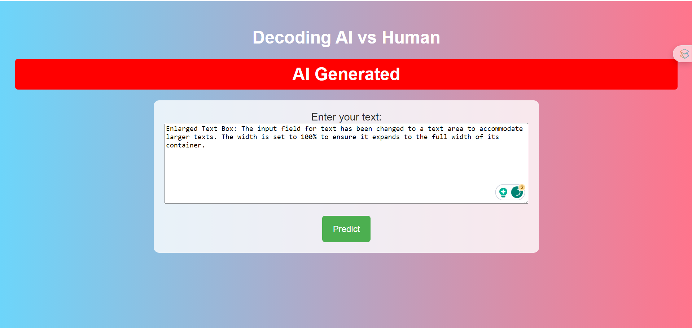
AI vs Human Text Detector
Interactive web application to classify human-written vs AI-generated text.
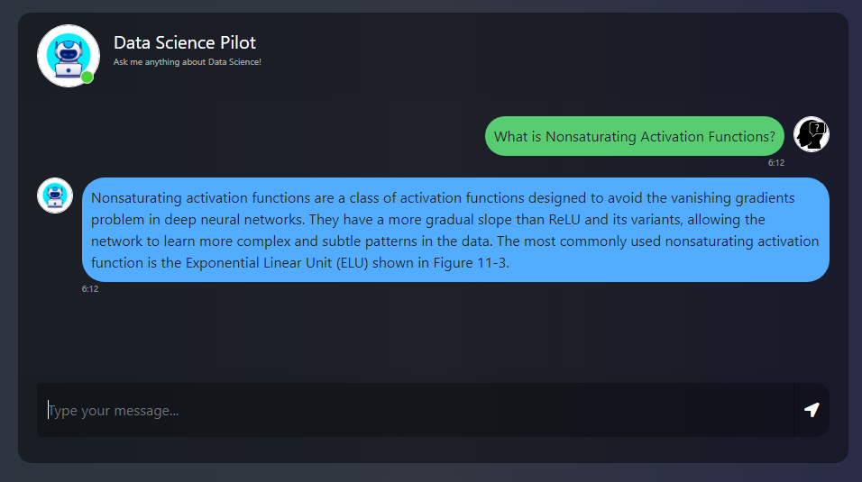
DataSciencePilot (RAG System)
Chat-based interface for querying custom PDFs using Pinecone and LLaMA-2.
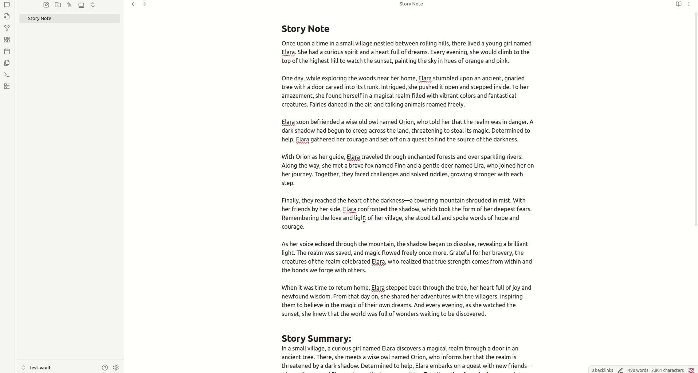
Obsidian AI Assistant Plugin
TypeScript-based Obsidian plugin with OpenAI integration, multi-file context, streaming responses, and robust UX flows.
All Projects
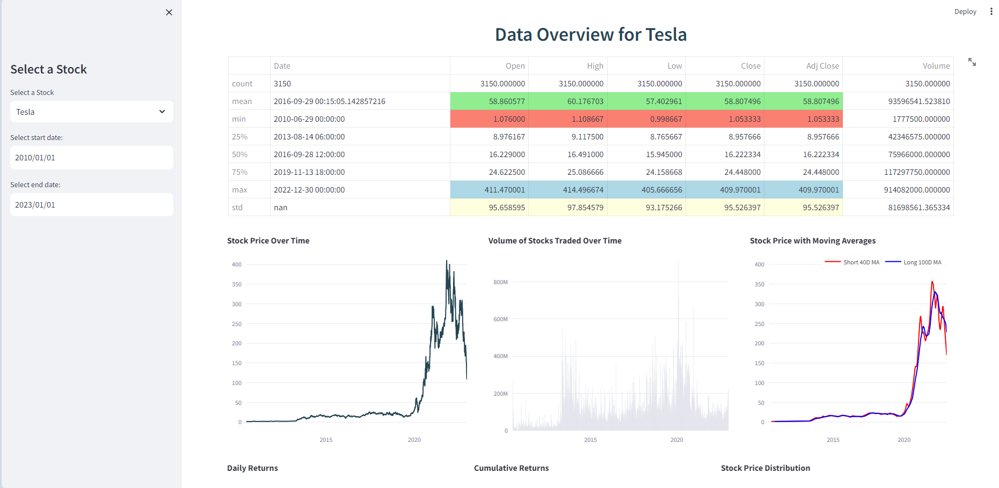
Stock Price Forecasting
LSTM models for stock price prediction in Bangladeshi and global markets.
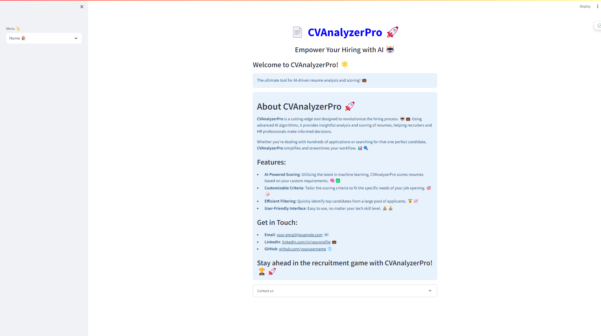
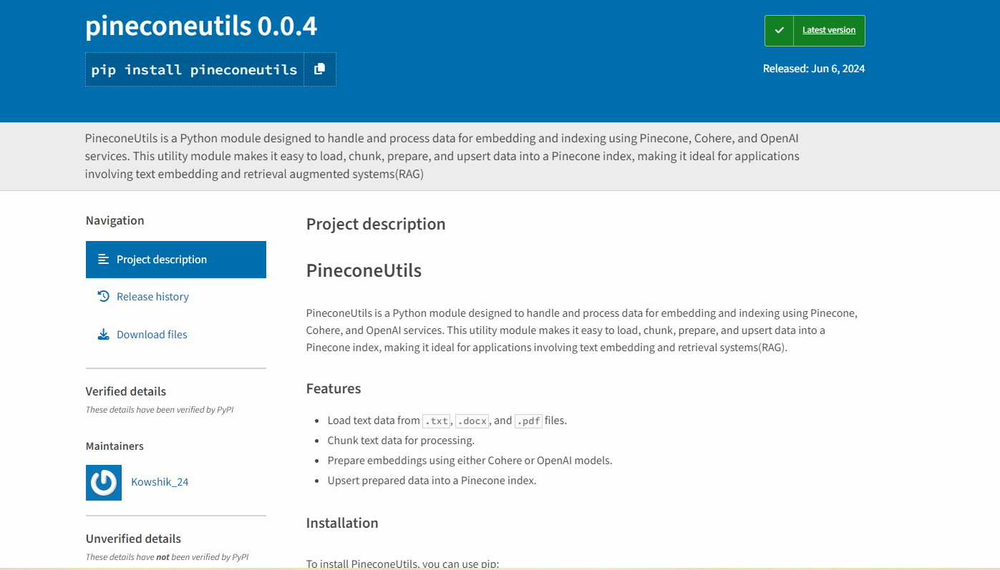
Pinecone Integration Suite
Authored and published two Python libraries to simplify data handling for RAG systems.
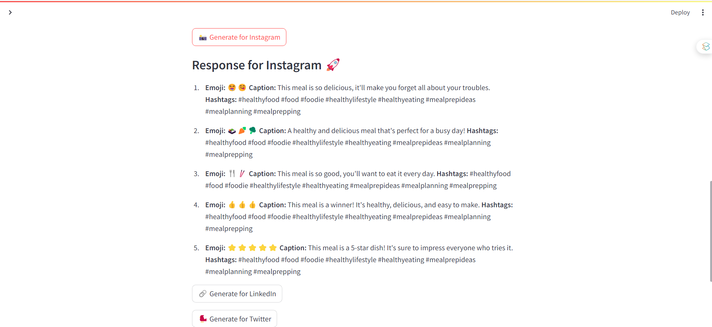
CaptionCraft
Web application to generate image captions using the Google Gemini Pro Vision API.
Market Price Prediction
Implemented and compared multiple time-series models to predict product prices.
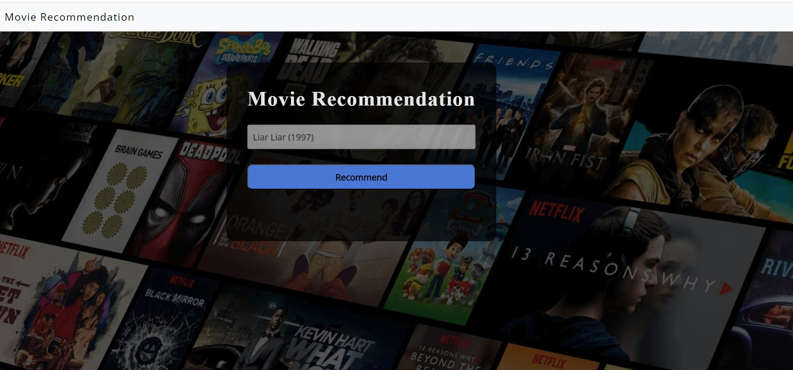
Movie Recommendation
Implemented a KNN model using cosine similarity to recommend movies based on user input.
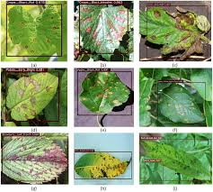
Potato Disease Classification
Built a CNN model achieving near-100% accuracy in classifying potato diseases from images.
Diabetes Prediction
Constructed an Artificial Neural Network with PyTorch to predict patient diabetes status.
Research Software, Tools & Interactive Demos
Research software, technical tools, and educational visualizations
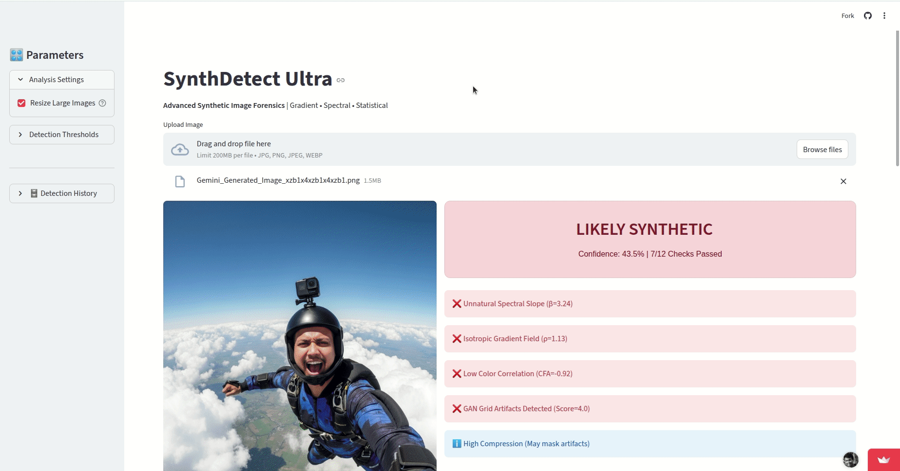
SynthDetect Ultra: AI Image Forensics
Advanced forensic tool to distinguish authentic photographs from AI-generated images (GANs, Diffusion). Uses explainable, physics-inspired and statistical features to detect synthetic "fingerprints" invisible to the naked eye.
- Physics & Optics: Chromatic Aberration, CFA correlation
- Frequency Domain: Spectral Slope, High-Frequency Ratios
- Statistical: Benford’s Law, Noise Residual Kurtosis
- Pixel-Level: Error Level Analysis, Gradient Field anisotropy
- Explainable radar charts & heatmaps
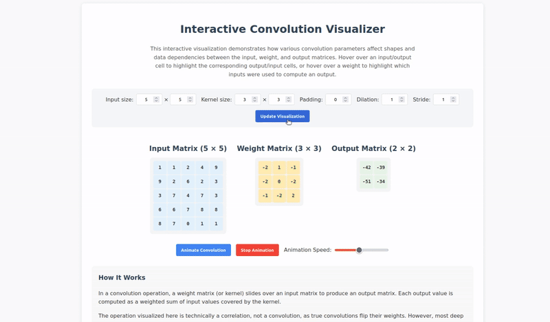
Interactive Convolution Visualizer
An interactive web-based tool to visualize and understand convolution operations in deep learning and image processing.
- Interactive convolution visualization
- Real-time parameter adjustment
- Animated processing steps
- Educational tooltips
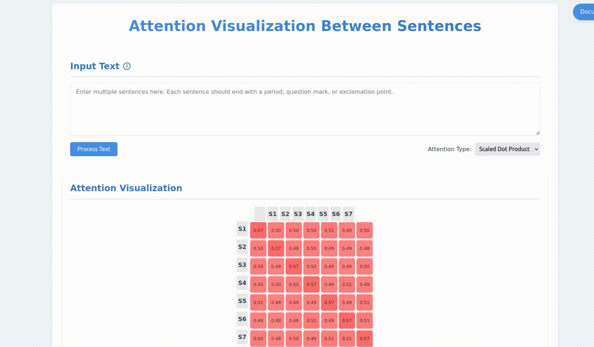
Attention Visualization Tool
Interactive tool to visualize attention mechanisms between sentences using various attention types and vector similarity measures.
- Sentence-level attention heatmaps
- Multiple attention types (Cosine, Dot Product)
- Interactive matrix exploration
- Automated insights & analysis
Obsidian AI Assistant Plugin
A TypeScript-based Obsidian community plugin integrating OpenAI APIs for context-aware assistance with multi-file context, history, and streaming responses.
- Multi-file context and conversation memory
- Real-time streaming responses
- Robust error handling and keyboard shortcuts
- Modular OpenAI service architecture
PixelContext
Capture UI context from any webpage and export production-quality, AI-ready Markdown prompts. Built for engineers, designers, and product teams who need fast, structured UI feedback.
- Capture package: note, selector, HTML, CSS, computed styles, screenshot ref ID
- Ctrl/Cmd + Shift + X capture toggle + quick composer workflow
- Persistent per-page history, re-highlight, edit notes, delete captures
- One-click Markdown export to clipboard for AI tools and issue trackers
- Fully client-side: no backend and no API key required
Competitions & Achievements
Open Source Contributions
Pinecone Canopy
RAG framework and context engine for retrieval-augmented generation systems
View CommitKhoj AI
Open-source AI search and personal assistant platform
- • Added copy-to-clipboard support for references in the web app reference panel
- • Implemented markdown bullet-list formatting for copied references (notes, online, and code)
- • Contribution merged into master as PR #1144 with follow-up UX polish
Certifications & Professional Development
Understanding and Applying Text Embeddings
DeepLearning.AI - November 2024
A comprehensive short course on the end-to-end development of applications using text embeddings.
Key Topics:
- • Fundamentals of creating, understanding, and visualizing embedding spaces
- • Leveraging embeddings for practical applications like semantic search and retrieval
- • Building a complete Q&A system (Retrieval-Augmented Generation) using Google's Vertex AI
Get In Touch
Interested in research collaboration, academic inquiries, or professional opportunities?
Open to research collaborations in Explainable and Trustworthy AI, Computer Vision, NLP, Large Language Models, multimodal learning, and low-resource language technologies.
Based in Brookings, South Dakota, USA